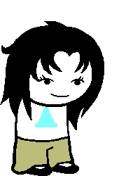

Amp of Hope
Full name:
Trolltag/Chumhandle: onlygirlbutonAshipthistime
Quirk: Maybe it’d be best if you have those HANDS free...
Associated Colour: #00ffff
Session: N/A
Dancestor: Dill
Modus: The Plan Modus
(Items appear according to her plans.)
Strife Specibus: Penkind
Server: N/A
Client: N/A
Matesprit: Ship!Tomm
Kismisis: N/A
Morail: N/A
Auspistice: N/A
Land:
Your land is the PROSPIT in SPACE. You do not have a normal land, as you were never technically a player. You live on said ship with all the other Ship! Players.
Notes 1:
Notes 2: